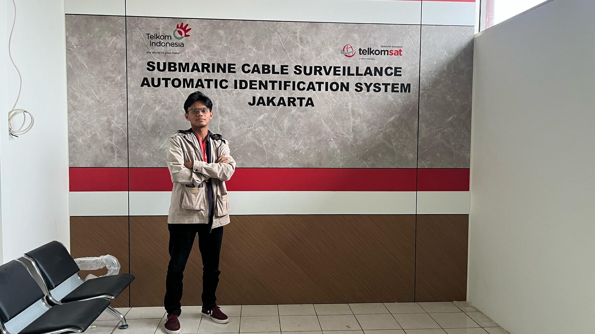

ArcGIS
ArcGIS QGIS
QGIS GitHub
GitHub
Telkom Indonesia
Digistar Class Intern 2025
Mar 2025 - Aug 2025
Participated in Digistar Class Intern: Fresh Graduate Batch 1 with role as a Business Analyst. Telkom Indonesia's internship program that includes on-site work experience, softskill and hardskill class sessions.